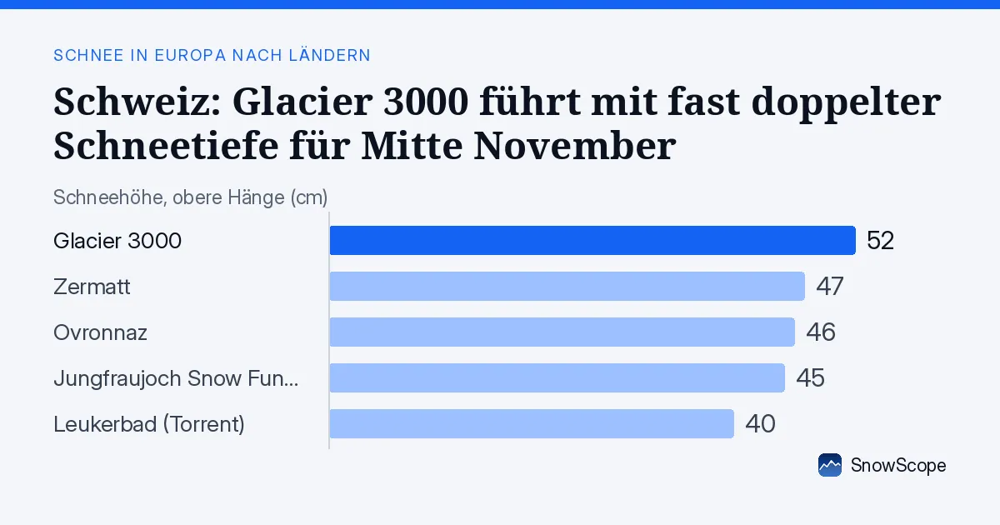
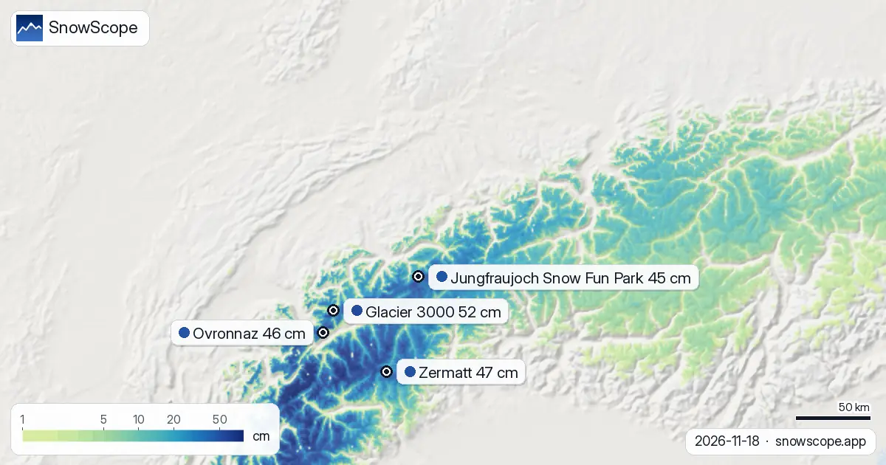

Schweiz: Glacier 3000 führt mit fast doppelter Schneetiefe für Mitte November
Glacier 3000 ist der Schneeführer in der Schweiz mit 52 cm Tiefe – fast doppelt so viel wie sonst um diese Zeit. Drei der fünf Hauptgebiete liegen bereits deutlich über ihren typischen Werten für Mitte November, schwere Niederschläge sind in der kommenden Woche zu erwarten.
Die Live-Schneeprognose für Glacier 3000 in der SnowScope-AppSchneehöhen, Pulverschnee-Alarme und 3D-Karte, gratis.
Über dem Durchschnitt an den Hochgipfeln
Das Satellitenbild zeigt Schweizer Skigebiete über ihrem saisonalen Durchschnitt. Glacier 3000 liegt bei 187% des Normwerts für den 18. November, während Zermatt an seiner Mittelstation (2716 m) 214 cm trägt – bemerkenswert 690% der üblichen Tiefe. Ovronnaz und Leukerbad liegen näher am Durchschnitt, aber die meisten Hochaltitude-Zonen haben ihre Basis schneller aufgebaut, als frühere Winter vermuten lassen.
Dieser frühe Vorsprung ist real, nicht optisch täuschend. Unser Schneemodell deckt 31.030 km2 in der Schweiz ab. Heute sind 16.060 km2 schneebedeckt, 1.640 km2 mehr als gestern. Vor einer Woche waren nur 12.550 km2 verschneit. Der Trend ist klar: Schnee kommt früher und stapelt sich schneller als der Novemberdurchschnitt.
| Skigebiet | Heute | Normal an diesem Tag | Anteil am Normalwert |
|---|---|---|---|
| Glacier 3000 | 43 cm | 23 cm | 187 % |
| Zermatt | 214 cm | 31 cm | 690 % |
| Ovronnaz | 27 cm | 19 cm | 142 % |
| Jungfraujoch Snow Fun Park | 59 cm | 71 cm | 83 % |
| Leukerbad (Torrent) | 15 cm | 16 cm | 94 % |

Wo der Schnee gerade liegt
Schnee liegt überall über 1500 m, wo die Bedeckung auf 93% springt und die Tiefen schnell anwachsen. Zwischen 2000 und 2500 m beträgt der Durchschnitt 8 cm über das kartierte Gebiet. Über 2500 m klettert der Durchschnitt auf 21 cm. Unter 1500 m bleibt es größtenteils kahl, daher müssen Frühjahrsfahrer zu den hochgelegenen Liften.
Das Satellit sieht heute 52% von der Schweiz modellierten Gelände in Weiß. Das ist ein solider Start. Die Walliser Alpen führen an: In den letzten 72 Stunden fielen dort 116 cm Neuschnee. Das Berner Oberland sammelte im gleichen Fenster 72 cm. Diese Zahlen kommen aus unserem Modell, das Schnee über kartierte Regionen schätzt; sie sind nicht an einem einzelnen Punkt gemessen.

Rangliste der Top-Five-Gebiete heute
Glacier 3000 führt mit 52 cm, gefolgt von Zermatt mit 47 cm und Ovronnaz mit 46 cm. Jungfraujoch Snow Fun Park hält 45 cm, während Leukerbad bei 40 cm liegt. Alle fünf bekamen in den letzten drei Tagen Neuschnee – Glacier 3000 sah 77 cm, Ovronnaz 63 cm und Jungfraujoch 58 cm. Das sind Schätzungen für das Gebietsgebiet, berechnet aus unserem Modell; sie sagen dir, welche Zonen die beste Basis haben, nicht die genaue Tiefe an einem einzelnen Punkt der Piste.
Was in den nächsten sieben Tagen kommt
Mehr Schnee ist unterwegs. Freitag, 19. November, ist der erste Tag eines stärkeren Pulses. Der Höhepunkt fällt auf den 20. November – unser Modell prognostiziert 39 cm an diesem Tag. In den nächsten drei Tagen sollen Glacier 3000 96 cm, Ovronnaz 82 cm und Zermatt 77 cm zulegen. Über die vollen sieben Tage könnte das Land bis zu 128 cm in den nassesten Zonen sehen.
Das ist eine Vorhersage, keine Garantie. Wettermuster verschieben sich. Aber das Signal ist stark: ein nasses, langsam ziehendes System wird sich über die Alpen durch das Wochenende und bis in die frühe Woche hinein lagern. Am 21. November wird sich das Bild ändern – wir wissen dann viel mehr.
Höhenbänder: wo du fahren kannst
Die kritische Linie liegt bei 1500 m. Darunter ist Schnee noch rar – 15% Bedeckung und meist blanker Grund. Von 1500 bis 2000 m springt die Bedeckung auf 93%, aber die Tiefe ist dünn mit 3 cm; Steine können durchschauen. Bei 2000 bis 2500 m wird die Basis fester: 8 cm Durchschnitt und 100% Bedeckung. Über 2500 m erreichen die Tiefen 21 cm und die Bedeckung ist komplett.
Bleib für jetzt bei Gelände über 2000 m, wenn du hinausfährst. Die kommenden Stürme werden die Mittelhöhen füllen, aber Steine bleiben eine Gefahr an dünnen Pisten unter dieser Linie.
Drei Tage Veränderung
Der Trend erzählt die Geschichte. Am 16. November führte Ovronnaz mit 136 cm an seiner hohen Stelle an, aber nur 16.510 km2 waren schneebedeckt. Am 17. November kletterte Zermatt an die Spitze mit 47 cm gemessen an diesem Tag, aber die schneebedeckte Fläche schrumpfte auf 14.750 km2, da das Modell neu durchlief. Heute ist Glacier 3000 der Leader mit 52 cm, und die bedeckte Fläche ist auf 16.060 km2 zurückgebunden. Diese Schwankungen spiegeln wider, wie unser Modell aktualisiert wird und wie frischer Schnee ungleichmäßig über die Spannweite verteilt. Das zugrunde liegende Signal – mehr Schnee kommt schneller an als üblich für Mitte November – bleibt solide.
Tipps für Skifahrer
- Ziele Höhen über 2000 m an für jetzt. Schneentiefe und -bedeckung sind dort zuverlässig; darunter sind dünne Bedeckung und freigelegte Steine immer noch die Norm.
- Glacier 3000 und die Walliser Alpen sind deine beste Wahl heute. Sie halten die tiefste Basis und sahen den meisten Neuschnee in den letzten drei Tagen.
- Wenn du ins Gelände abseits der Pisten gehst, check den neuesten offiziellen Lawinenbericht für deinen Kanton und dein Höhenband. Neuschnee auf dünner Basis kann an steilen Hängen abrutschen.
- Freitag und Samstag bringen die stärksten Fälle. Rechne mit belebten Liftschlangen und veränderlichen Sichtverhältnissen; plan für kürzere Abfahrten und sicherere Pisten.
- Beobachte die Vorhersage-Aktualisierung am 21. November. Der nächste Schneepuls wird verschieben, welche Gebiete führen, und die Geländeauswahl wird sich ändern.
Zu diesen Zahlen
Die Schneehöhen der Skigebiete sind der meiste Schnee in den oberen Hängen laut SnowScope-Schneemodell (etwa 1 km, Lauf vom 18. November); es sind Schätzungen für eine Fläche, keine Messung an einem Punkt. Werte von Messstationen sind Messungen am angegebenen Tag. Prognosen können sich ändern. Lies vor dem Freeriden immer den offiziellen Lawinenlagebericht.
Diesen Bericht zitieren
Für Forschung, Lehre oder Presse: Zahlen und Grafiken sind unter CC BY 4.0 mit dieser Quellenangabe frei nutzbar.
SnowScope (2026), Schweiz: Glacier 3000 führt mit fast doppelter Schneetiefe für Mitte November, https://snowscope.app/blog/de/2026/11/switzerland-snow-ahead-of-normal-18-november-2026.html, abgerufen am 2026-11-18
SnowScope (Atlas Labs). (2026, November 18). Schweiz: Glacier 3000 führt mit fast doppelter Schneetiefe für Mitte November. SnowScope snow reports. https://snowscope.app/blog/de/2026/11/switzerland-snow-ahead-of-normal-18-november-2026.html
BibTeX
@misc{snowscope2026switzerlandsnowaheadofno,
author = {{SnowScope (Atlas Labs)}},
title = {Schweiz: Glacier 3000 führt mit fast doppelter Schneetiefe für Mitte November},
year = {2026},
month = nov,
howpublished = {\url{https://snowscope.app/blog/de/2026/11/switzerland-snow-ahead-of-normal-18-november-2026.html}},
note = {Published 2026-11-18 11:31 UTC; accessed 2026-11-18}
}· CC BY 4.0 · Methoden, Daten und Werkzeuge →
Glacier 3000: Schnee und Temperatur nach Höhe, dieser Winter vs letzter (Werkzeuge) →
Glacier 3000 folgen
Gratis: eine Nachricht, wenn Neuschnee kommt, und jeden Morgen die Vorhersage.